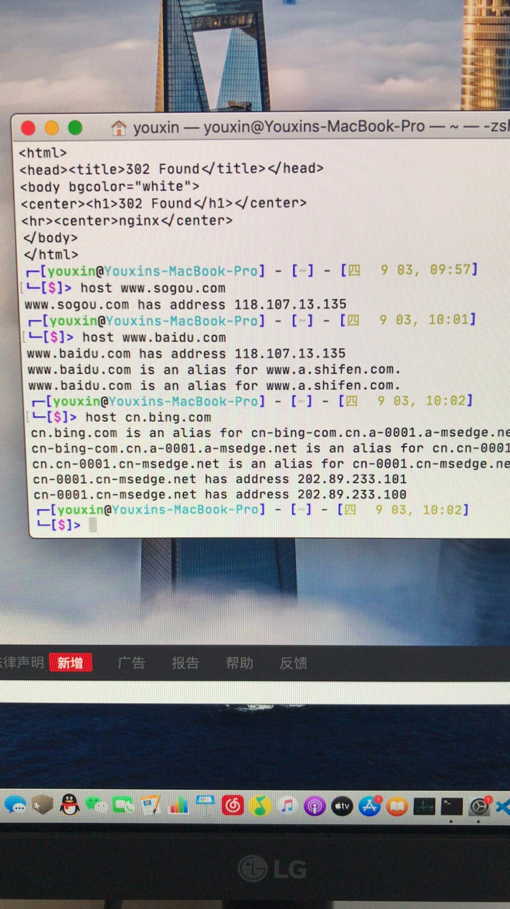

记一次DNS服务崩溃事件
~-~> 2020-09-03
大概是在昨天（2020 年 9 月 2 日）晚上发现必应搜索打不开，提示浏览器收到的数字证书不对；紧接着打开百度和搜狗都跳转到一个叫传奇的游戏的落地页。我最初怀疑局域网里有设备中招了，ARP 攻击。但是后来发现，连局域网状态下，百度域名解析到的 IP 地址，在手机的 4G 网络下同样跳转到传奇。我尝试用 curl 访问这个 IP 地址，果然 302 了。似乎公共的 DNS 一起中招了，阿里的好一点，必应中国还能用。最终我换上了本省本服务商的 DNS；写这篇文章之前，我又查看了下 114DNS 的解析结果，已经恢复正常了。
host hostname [server]
nslookup name [server]
以下照片中 118.107.13.135 就是出问题的 DNS 所指向的错误 IP 地址：

⚠️ 请先安装一款邮件软件（部分浏览器可能不支持，请使用设备默认浏览器打开本页面）